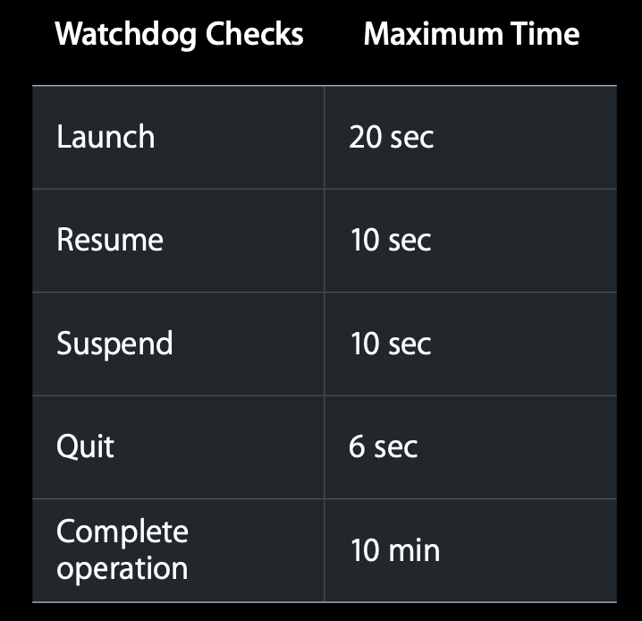
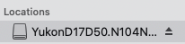
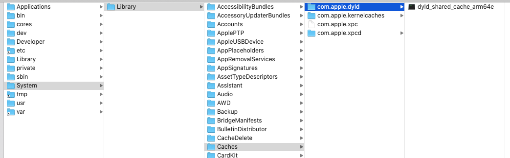
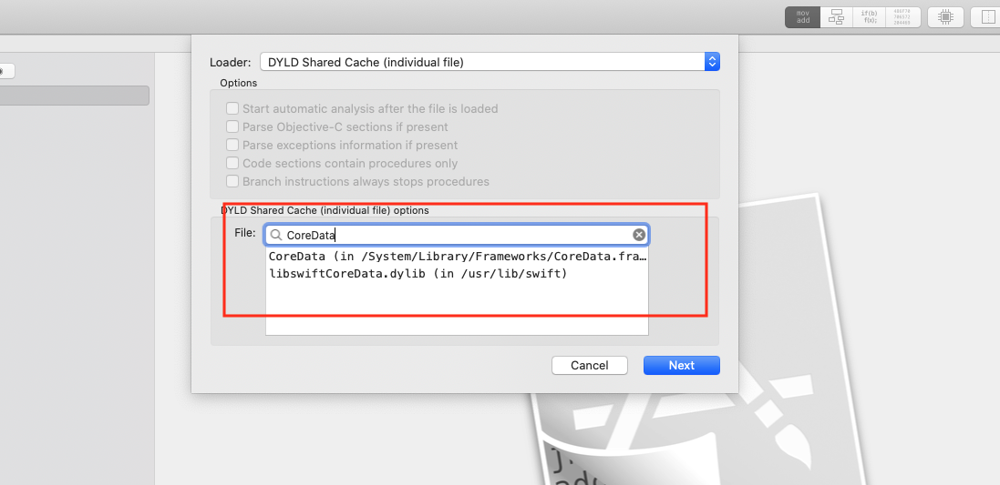
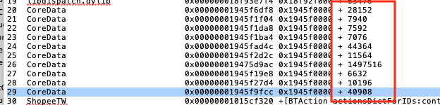
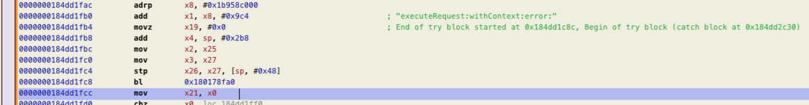
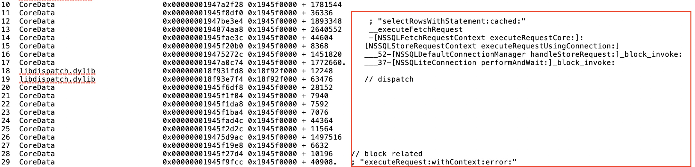

Recently, my colleague came to me for a crash report. It is a case where system watch dog kills our app for blocking main thread for too long time. It seems many people encounter issues of this sorts from time to time. However, there are a few articles about it. I hope this article could help you.
Exception Type
As we know, a crash report records app’s state when it crashed. It is a crucial and first-hand resource to help us figure out what was happening when a crash happened in user’s device. When i to a crash report. I always try to extract as much information as I can. Apple actually has dedicated article about how to analyze a crash report.
In this case, firstly, we can take a look at exception type, which is EXC_CRASH (SIGKILL). EXC_CRASH (SIGKILL) indicates the operating system terminated the process. See more here.
The crash report also contains a Termination Reason field with a code that explains the reason for the crash. Here, that code is 0xdead10cc:
0x8badf00d(pronounced “ate bad food”). The operating system’s watchdog terminated the app. See Addressing Watchdog Terminations.
1 | Exception Type: EXC_CRASH (SIGKILL) |
WatchDog
As we know, iOS has watchdog oto ensure application not drag down the system responsiveness. If your app has poor performance, watchdog will check then kill you app to make sure the shared resource well allocated. It is dev’s duty to maintain system responsiveness. The following table showing some cases for watchdog check, it comes from this session,

As for scenarios, Slow launch will cause OS to abort your app. 20 sec; resume and suspend is also very important 10sec; smooth scrolling 6s is also a key point. Besides, I also have seen blocking main thread will cause watchdog kill an app, like this
1 | transgression: application<com.wangya.test2>:21021 exhausted real (wall clock) time allowance of 19.99 seconds |
The Termination Description in my crash report shows our app exhausted real (wall clock) time allowance of 10.00 seconds. Besides, the ProcessVisibility shows it is Background and ProcessState is Running. It seems the crashed happened when it tried to resumed from background. But what caused it?
Backtrace
So we have to go to the stack trace in the crashed report. Unfortunately, he gave me a partially symbolicated crash report with CoreData related method remaining hexadecimal memory address. From the frame in our app, i know operations related to CoreData happening in main thread. Then, I have to symbolicate the crash report.
Symbolicate
Apple actually has doc to symbolicate the Crash Report in Xcode or symbolicate the crash report with the command line.
To symbolicate in Xcode, click the Device Logs button in the Devices and Simulators window, then drag and drop the crash report file into the list of device logs. And, crash reports must have the
.crashfile extension.

As Apple’s doc, Acquire Device Symbol Information says, I have to collect symbols for system frameworks like CoreData from the device where crashed happened.
The symbols for system frameworks are specific to the operating system release and the CPU architecture of the device. For example, the symbols for an iPhone running iOS 13.1.0 aren’t the same as the symbols for the same iPhone running iOS 13.1.2.
Unfortunately, I don’t have the device on hand to get the symbol information matching the operating system version recorded in the crash report. How to solve it? Well, I still have a way to work around. Let’s start to do that.
Check the os version and hardware model from the crash report. OS Version:
iPhone OS 13.3.1 (17D50); Hardware model:Hardware Model: iPhone11,8`download IPSW, iPod Software from https://www.theiphonewiki.com/wiki/Firmware/iPhone/11.x or https://ipsw.me/; or can decrypte
ipswby yourself following this guideIPSWfile actually iszipfile, we can change the file extensionipswtozip. Then unzip it. You can see a big disk image there.
Double click it. It will be mounted in filesystem. Then we can see it showing in the
Finder
Then go to
/System/Library/Caches/com.apple.dyldfolder. Drag this file toHopper
Since all executable dylib are shipped into this whole file, we have to filter out
CoreDatain the search bar.
Get
offsetfrom frame in the backtrace in the crash report. Usinggo to file offsetin Hopper,option + gto jump to that line of assembly code. I actually have a talk about how to use exception info, thread state, offset in backtrace in crash report to analyze crash report.
take
line 29as an example, it goes to ablinstruction. As we know, in Objective-C,x1stores the sector. So we can quickly figure out the selector isexecuteRequest:withContext:error:

Hmm, although it is a little bit tedious, we finanly get more info about what is happening here.
Basically, when resuming from background, our app triggers a data request operation in
CoreData. It is executed inmain threadand make the main thread wait this transaction finished. While, it is a bit of slow to execute this SQL-related transaction here and blocksmain threadfor extended period of time. Then when watchdog come to check, it terminates our app in order to maintain the system responsiveness.

As apple suggests, the watchdog terminates apps that block the main thread for a significant time. There are some cases of this sort, like
- Synchronous networking
- Processing large amouts of data, such as large JSON files or 3D models
- Triggering lightweight migration for a large Core Data store synchronously
- Analysis requests with Vision
This time, we ate bad food.
See More
若你觉得我的文章对你有帮助，欢迎点击上方按钮对我打赏
扫描二维码，分享此文章